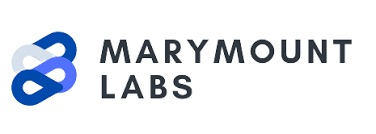

Backend/AI Engineer
Experience in backend engineering and multimodal AI systems that extract structured data from unstructured sources. Currently researching SQL mutation testing to make NL-to-SQL benchmarks more semantically robust.
Final-year CS @ NUS (GPA 4.64/5.0)
NUS Overseas Colleges (Silicon Valley @ Stanford)
Seeking Software Engineering roles starting Summer 2026 (US or Singapore, H-1B1 eligible).
Experience
Software Engineer Intern · Kipo AI
May 2025 - Aug 2025 · San Francisco, CA
- Returned to Kipo to rebuild the electronics pipeline and work with cool people
- Refactored single-vendor extraction pipeline into a generalized agentic system, enabling new vendor PoCs
- Designed error-driven re-prompting for diagram parsing, improving precision and cutting error rate
Software Engineer Intern · Kipo AI
Jan 2024 - Dec 2024 · San Francisco, CA
- Joined Kipo through NUS Overseas Colleges in Silicon Valley, to build systems to make millions of parts searchable
- Saw the team double in size and move offices within a year
- Built an OCR + vision + LLM pipeline to extract information from datasheets
- Developed an AWS-based ingestion system to collect and organise large volumes of documents from scraping
- Prototyped hybrid component search combining RAG with NL-to-SQL for natural language part queries
 Software Engineer · Marymount Labs
Jan 2023 - Oct 2023 · Singapore
- Joined Marymount Labs as the first hire and first engineer
- Built a natural language search tool so doctors and nurses could query clinic records without writing SQL
- Created an SMS follow-up system that helped clinics reach patients more consistently
- Helped deploy and maintain an electronic health record system across dozens of clinics
Data Analyst · i-CARE Primary Care Network
Feb 2022 - Jun 2022 · Singapore
- Helped a healthcare network manage reporting requirements for the Ministry of Health
- Automated manual compliance reports, turning hours of repetitive work into a simple scheduled task
- Saw first-hand how even small bits of automation can boost productivity and free up staff time in an SME
Assistant Software Engineer · NEC Asia Pacific
Nov 2021 - Jan 2022 · Singapore
- First real job in software — got to see how engineering teams in a large MNC operate
- Helped build and test backend APIs for a CRM system used in regulatory workflows
 Teaching Assistant · National University of Singapore
Teaching Assistant · National University of Singapore
Aug 2023 - Nov 2023 · Singapore
- Taught weekly tutorials for CS1101S (Programming Methodology) to a class of 6 students
- Received strong student feedback, with an overall effectiveness score of 4.8/5, above the department average (4.3/5)
Projects
 SQL Mutation Testing on NL-to-SQL Benchmarks
SQL Mutation Testing on NL-to-SQL Benchmarks
Independent Final Year Project supervised by Prof. Manuel Rigger · Aug 2025 - Present
Stack: Python, SQLGlot, PostgreSQL, VeriEQL, LLMs
Problem: Current NL-to-SQL benchmarks rely on execution accuracy, missing semantic equivalence and inflating reported results
Approach: Designing a system that generates SQL mutants, runs gold vs. mutant queries, flags surviving queries and experiments with solver-based equivalence
Progress: Early experiments show a high survival rate of mutants (>50%), indicating significant benchmark blind spots
CoreFlint · AI Procurement Automation Platform
Co-founded project · Sep 2025 – Present
Stack: Python, FastAPI, PostgreSQL, OCR, LLMs
Problem: Procurement teams receive RFQs, POs and quotes in messy formats (PDFs, emails, spreadsheets), requiring manual data entry into ERP systems
Solution: Built an OCR + LLM pipeline for line-item extraction, transforming unstructured procurement docs into ERP-ready outputs
Features: Human-in-the-loop review and approval workflow; export formats and connectors scoped for SAP/Oracle integration
 WhatsApp Actions · LLM-Powered Business Assistant
WhatsApp Actions · LLM-Powered Business Assistant
Prototype project · Aug 2025
Stack: Python, React, LLMs, WhatsApp Business API
Problem: Without ERP or CRM systems, many SMEs handle sales, support and brand communications entirely on WhatsApp, which leads to slow and inconsistent responses
Solution: Built an LLM-powered assistant that classifies incoming messages, drafts replies and routes them for human approval before sending, tested with an SME customer
Features: Automated message categorization, draft reply generation and human-in-the-loop review to balance speed with reliability
Education
 National University of Singapore
National University of Singapore
B.Comp Computer Science
Expected May 2026
GPA: 4.64/5.0 (First Class Honours)
Stanford University
Mar 2024 – Jun 2024 · NUS Overseas Colleges (Silicon Valley)
Took entrepreneurship courses (MS&E472, MS&E178)
Audited CS221 (AI) and CS244b (Distributed Systems)
Got to meet cool people like Sam Altman, Qasar Younis and Ali Ghodsi
University College Dublin
Jan 2025 – May 2025 · Student Exchange Programme
Enjoyed Guinness and travelled a lot